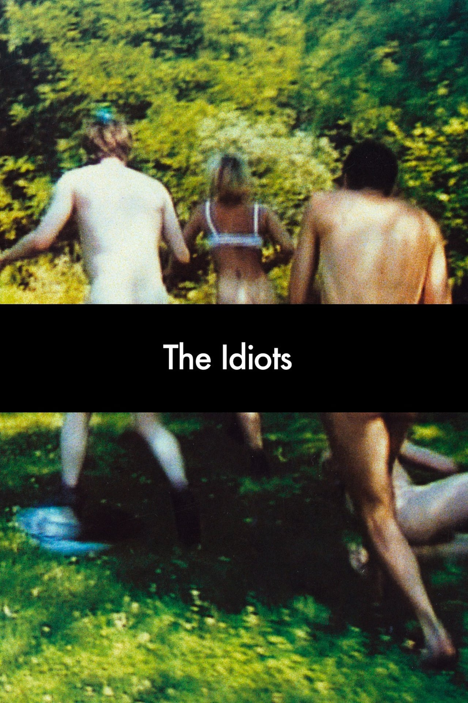

Dany Buts
Video editor / programmer
In a former life i started out fiddling in a Qbasic and Turbo Pascal world, but after I drifted away into the audiovisual world where i edited mainly documentaries, magazine shows and yes some ads.
Now it's time to make the circle round again. Back to coding! I don't want to get into too dusty offices - been there, done that, so i think in stead of doing Java, I guess web development is where the sparkles are!
Favourite movies
Leaving Las VegasBen Sanderson, a Hollywood screenwriter who lost everything because of his alcoholism, arrives in Las Vegas to drink himself to death. There, he meets and forms an uneasy friendship and non-interference pact with prostitute Sera. Director: Mike Figgis |
|
IdaAnna, a young novitiate nun in 1960s Poland, is on the verge of taking her vows when she discovers a dark family secret dating back to the years of the German occupation. Director: Pawel Pawlikowski |
|
|  |
The idiotsThe group of people gather at the house in Copenhagen suburb to break all the limitations and to bring out the "inner idiot" in themselves. Director: Lars Von Trier |